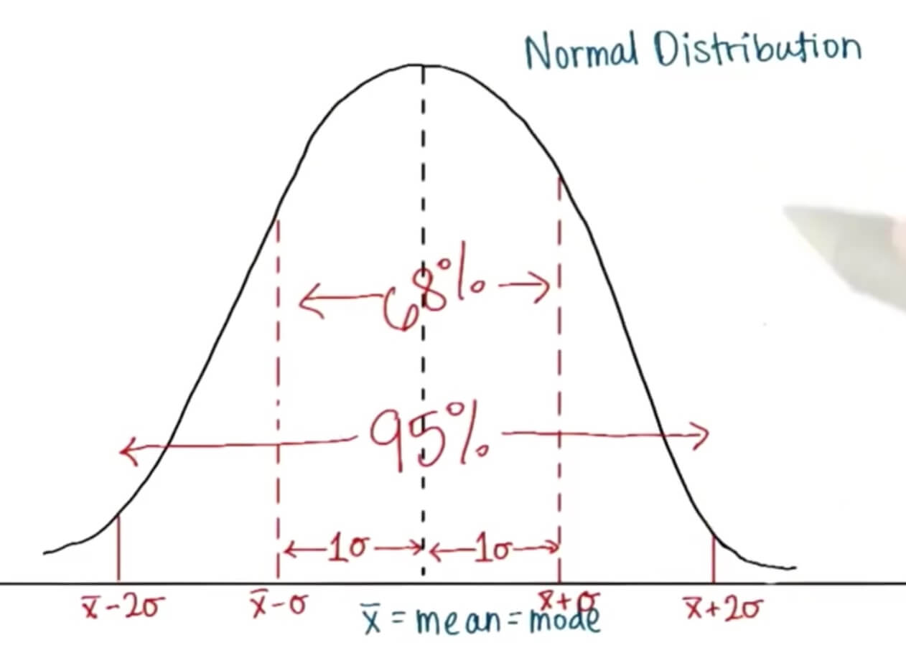

归一化概念记录
Z值
原始值跟均值之间相差几个标准差
公式 z = (x - μ) / σ可以将数据归一化
标准正态分布
平均值为0， 标准差为1
正态分布概念记录
概率密度函数（PDF）
概率密度函数曲线下的面积是1，因为它是用分布数据的相对频率（比例）来绘制数据模型的
概率密度函数的百分位
选中一个X值如果小于等于该值的概率是80%，那么就称X是第80个百分位
概率

Z 表格

在计算的时候需要善于使用技巧，使用正态分布左右对称， 和几个特定的点的概率可以加快计算的速度。
抽样分布概念记录
样本均值分布
从总体中取出多个样本分别计算出均值的分布
所有样本均值的标准差（SE）（Standard deviation of distribution of Sample means）
样本量 n
总体的标准差 sigma σ
σ / √n = SE
均值的标准偏差等于总体标准偏差除以样本量的平方根
中心极限定理(The Central Limit Theorern)
对于均值分布，其中每个均值都是样本量为n的均值，该分布的标准差就等于总体标准差除以平方根n
抽样分布总是趋近于正态分布
抽样分布的均值跟总体的均值相同